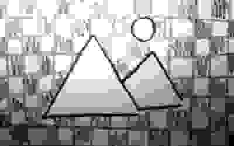
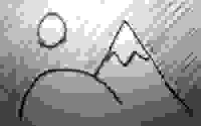
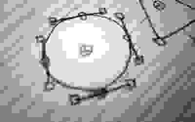
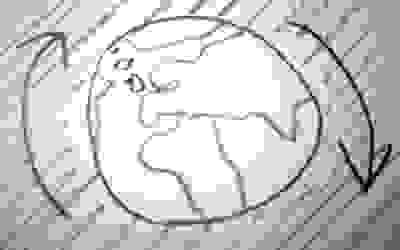
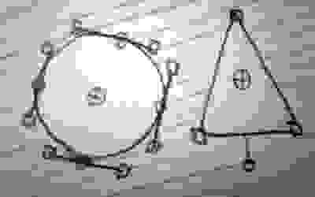

formáty
Existuje mnoho různých formátů. Každý formát obrázku má své výhody a nevýhody. Některé formáty jsou rastrové (taktéž nazývané jako bitmapové) a vektorové. Rastrové formáty jsou nejlepší na zachycení digitálního obrazu z fotoaparátu. Nevýhodou je to, že se zvětšením ztrácí kvalita obrazu. Zároveň tento typ formátu zabírá více místa na disku. Vektorové formáty na druhou stranu mají výhodu takovou, že se dají zvětšovat bez snížení kvality, a zároveň mají malou velikost na disku. Na druhou stranu se vpodstatě nedá využít na zachycení fotografií.

png
Tento formát je rastrový. Jeho hlavní funkce je pro šíření obrázků na internetu. Podporuje bezdrátovou kompresi dat. Jeho největší výhodou je práce s transparentností. Na druhou stranu může zabírat více místa na disku.

jpg
Taktéž se jedná o rastrový formát . Zde se využívá ztrátová komprese dat. Je to nejrozšířenější formát na ukládání fotek. Instance těchto souborů obvykle zabírají méně místa na disku – díky tomu jsou vhodné na ukládání obrázků ve vysokém rozlišení.

svg
Tentokrát se jedná o vektorový formát. Mezi jeho výhody patří hlavně zvětšování velikosti bez ztráty kvality. Dále formát podporuje animace, kaskádové styly a skriptování. Je hlavně rozšířený na internetových webech.

gif
Jedná se o rastrový formát. Podporuje bezztrátovou kompresi dat. Je známý pro svou funkci animace. Mezi nevýhody patří omezená velikost barevné palety.
webp
Jedná se o více multifunkční rastrový formát od společnosti Google. Podporuje ztrátovou a bezztrátovou kompresi. Mezi jeho výhody patří podpora animací, transparentnost. Nejčastěji se s ním můžeme setkat na webech.

eps
Tento formát je také vektorový. Stejně jako formát SVG se dá zvětšovat bez ztráty kvality. Tento soubor také podporuje skriptování. Nejvhodnější použití tohoto formátu je v tiskovém průmyslu.